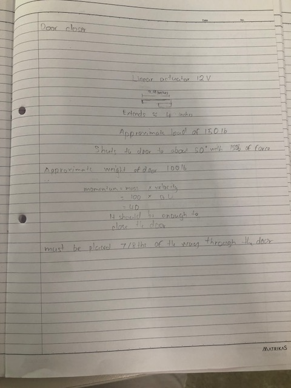
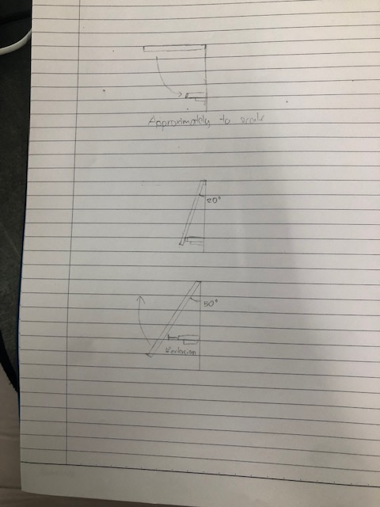

My plan for the final project is two machines put together. The first one is a device that alt+tabs on my computer when my room door opens. I have 3 options designed as showcased above
My first machine will work using a Hall Sensor and an ESP32, I will use the Hall sensor to send an inout to my computer about the door's position and then using that input, I can use the alt+tab function on my computer.
My second machine is a door closes that works on input from my computer
The main part of this door closer is the linear actuator. The calculations and measurements and listed below
The linear actuator design I looked at is 12"(11.9) inches long and can extend to 4 inches using 12V and 150lb of force
This linear actuator can push the door to 50* and momentum should take care of the rest according to my calculations
This video documents the basis of a linear actuator which is the main part I will use to create my door closerhttps://www.youtube.com/watch?v=e9V2GY1WaRU
Parts List: